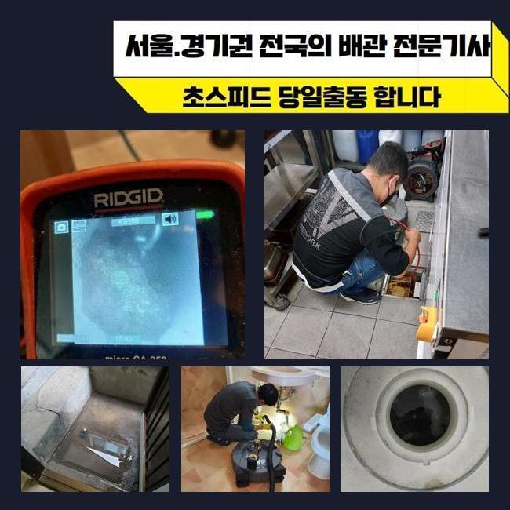
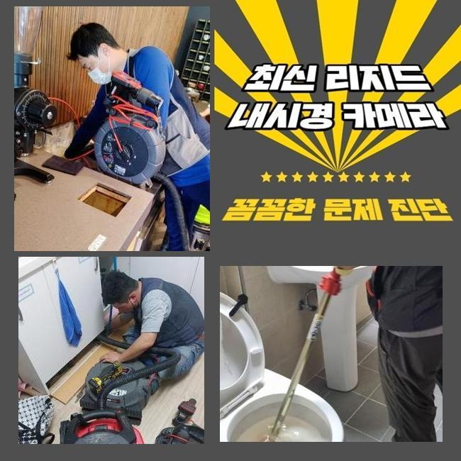
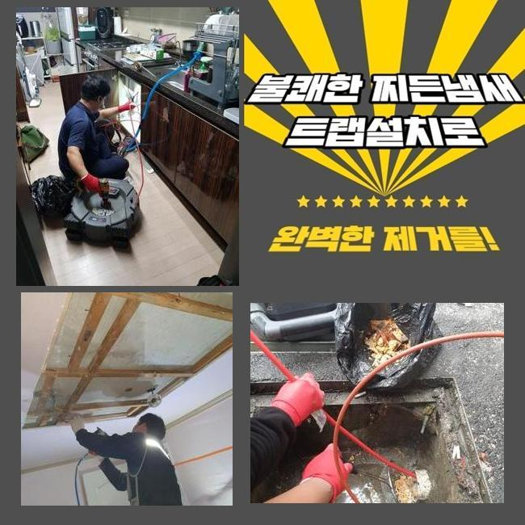
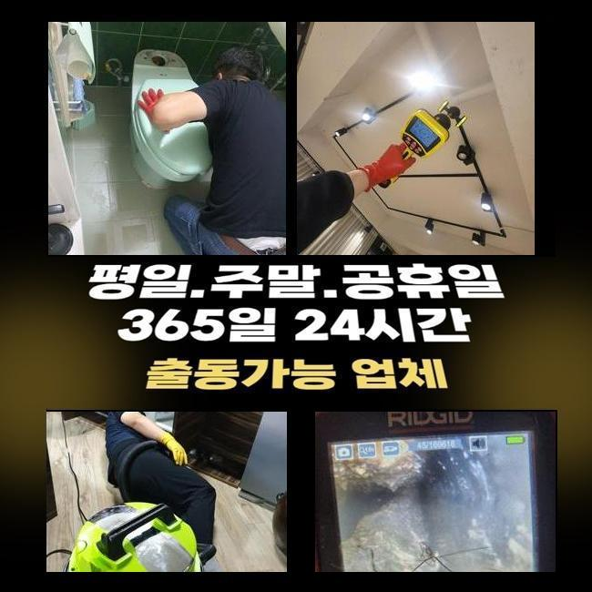
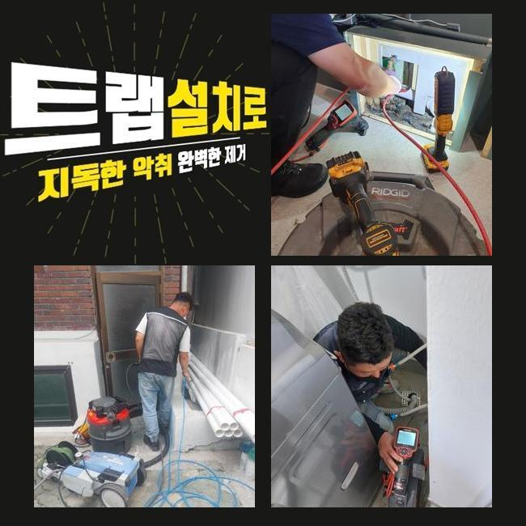

🏠 용인 영덕동화장실막힘 동백동 하수관고압세척 출장수리
용인 영덕동 하수구막힘 전문 시공 후기

📋 작업 개요
- 위치: 용인 영덕동, 영덕동, 용인
- 서비스 유형: 하수구막힘, 배관막힘, 맨홀막힘, 뚫는업체, 배관청소, 고압세척
- 작업 일시: 2025. 3. 6. 22:49
- 업체명: 하수구수사대 (010-5615-2118)
🔍 문제 상황
용인 영덕동화장실막힘 동백동 하수관고압세척 출장수리
멀지 않은 위치의 현장에서 하수구 시설의 막힘으로 당장 영업이 안 된다며 하시며 빠른 방문이 필요하다는 신청을 받고 다녀왔습니다
음식점과 같은 매장은 하수구가 가로막히는 문제점으로 인해 수도시설을 운용하지 못하므로 음식 만드는 활동이 어려우니 손님맞이를 할 수 없습니다
하루 빨리 배수기능을 회복시켜야 고객님이 입을 악영향도 다운시킬 수 있기 때문에 가까운 시일 내에 찾아뵙고 처리를 해드리기로 했습니다
현장에 계셨던 고객님은 주방 밑의 배수구가 막힌건지 물 방출이 이뤄지지 않으며 바깥에 있는 커다란 하수관에서 물 솟구침도 일어난 것도 문제라고 봐달라고 하셨습니다
실내 가까이에 있는 물이 배출되는 출입구를 먼저 개선시키고 야외의 배수시스템까지 추가 처리를 해드려야 하니 간단하지만은 않은 시공에 들어가야했습니다
계획적인 접근을 위하여 전반적인 막힘 현황을 모아서 생각해보고 이번 업무의 소요시간을 짐작해보고 알려드립니다
관로가 접해있는 부분이 많다면 데미지를 크게 입은 곳이라면 말끔하게 고치려면 약간 지연될 수 있습니다
실내에 이어 바깥 하수구를 열어보려고 했는데 맨홀 덮개가 부식이 많이 되어있었고 바닥부근에 이르기까지 심히 젖어있다보니 엉망이 되어 있었습니다
시설에 대한 훼손이 나타나지 않도록 집중력을 발휘하여 뚫어야겠다고 다짐하고 본격적인 관측에 들어갔어요

🔎 원인 분석
💡 전문가 진단: 정밀 진단 장비를 사용하여 슬러지의 고착 여부를 판명하고 타격/세척 작업을 실시했습니다.
불빛을 비춰서 내부를 보자 오염물질이 감별됐습니다
혼탁한 슬러지 덩어리가 부상해 있는 걸 즉시 인식할 수 있을 수준이었기 때문에 진입부의 청소 먼저 실시해서 시야를 확보해야 했습니다
가까운 쪽의 배수로를 우선 찌꺼기를 빼내주고 관로를 보여주는 내시경 기기를 배치하여 아래 상황을 판단해요
안팎의 배관들이 이어져있는 전체 구조를 확인을 해준 이후에는 고압세척기의 파워로 여기저기에 때처럼 껴있는 유분기 어린 슬러지를 세척하기로 단계를 구상했습니다
이대로라면 하수구 카메라를 넣어봤자 어떤 것도 살펴보기 힘들 듯 해서 잔여하수를 빨아내는 석션기 업무에 먼저 임했습니다
이 석션기기는 마치 청소기처럼 진공을 이용하며 누적된 잔여 오염수와 오물들을 속 시원하게 빨아당겨 없애는 것에 목적을 두고 있습니다
흡수하는 힘이 남다르므로 견고하지 않은 액체나 고체는 쉽게 끌어올려지면서 집수통 내부에 들어가서 누적됩니다
점도가 높은 찌꺼기나 벽과 한몸처럼 말라붙은 물질들은 잘 떨어지지 못하니 석션기의 가동만으로는 배관을 시원하게 뚫어내는 현장들이 많지않은 것이 사실입니다
하지만 처음과 마무리에 십중팔구는 석션기기를 쓰고 있을만큼 배수로의 정비를 잘 끝내려 한다면 항상 써야하는 통과의례에요
석션의 가동으로 관로 입구를 싹 쓸어준 이후에 배관 검토 카메라를 진입시켰습니다
내시경을 쓰게 된다면 땅바닥 아래에 깔린 채 색다른 식으로 설치된 배관일 때도 놓치는 구석 없이 조사해보며 원인이 된 대상과 오염물질의 밀착도나 연식에 관련한 관측할 수 있어요

🔧 작업 과정
이번 현장을 들여다보니 기름기가 잔뜩 고인 기름때가 상당량 자리하고 있었어요
결과를 내보면 이것들이 고질적 막힘이 빈발하는 식당의 유력한 사유라는 추정이 됐습니다
배수관 마개를 뚫고 새어나간 기름 성분이 통로 지름에 맞게 자라났고 그리하여 밖으로 빠져나갈 틈이 없다보니 잔수가 자꾸만 고이면서 그나마 뚫린 위로 솟구친 것입니다
샤프트 스케일링으로 정리를 해주면서 관로들이 연결되는 야외 하수시설까지도 보완을 해드려야 했는데요
플렉스샤프트라는 장치는 말단에 쇠사슬이 부착이 되어 있는 툴이에요
석션기로 미처 치워지지 않은 덩어리진 노폐물이라거나 관로에 착 달라붙은 오물을 살살 긁어서 빼거나 파쇄할 수 있습니다
이러한 두 청소 장비와 파이프를 보는 카메라 역시 종합적으로 써야 청소가 만족스럽게 끝나며 꿈쩍도 하지 않는 배관의 성능을 원상복구할 수 있습니다
세부적인 조사에 착수해보았더니 쉽게 끝날 문제 같지는 않아서 고압의 물을 분사하는 청소기법도 들어가야 한다고 판단했습니다
샤프트 석션으로 내부정화를 한 덕에 하수의 이동성이 제법 나아짐이 느껴졌기에 고압세척기를 넣어서 내부 정화를 이어갔습니다
높은 압력으로 응축된 물줄기를 시원스럽게 발사하는 노즐의 방향을 잡아주고 이물질의 밀집도가 높은 파트를 씻어나가기 시작했습니다
꼼꼼하게 고압수를 쏘고나니 결국 통수불능을 야기했었던 기름 슬러지들이 싹 사라졌네요
청소기기를 돌리기 전에 내시경으로 관로의 형상과 심각도를 모두 알아내고 난 다음에 집중력있는 청소 작업을 이행하여 내부에 있던 이물질을 빼내고 없애는 것에 대성공을 맛보게 됐네요
오늘의 프로세스를 끝내고 청소된 내측을 봐줬는데 새로운 배관으로 재탄생한듯 여기저기 부착되어있던 침전물이 흔적도 보이지 않았고 추가로 벽체까지도 말끔해져서 미끈하게 뚫린 배관의 모습도 관측할 수 있게 됐어요
파이프 안에 누적되면서 고정되어있던 하수도 시원스레 없어지고 그 모든 막힘의 원인들이 사라졌습니다
아무래도 음식점과 같은 매장은는 수돗물을 쓰는 양이 기본적으로 매우 많기 때문에 그만큼 통수가 중단될 위험이 더 크기는 합니다
손질한 식자재의 부속물이나 미끌미끌한 기름기가 물과 섞여 내려가지 않게 주방시설을 활용할 때 오염을 방지해야 합니다
육안상으로 개선을 체크했더라도 물의 폐기 과정을 확인하면서 시공이 결함없이 처리되었는지 살펴보는 편입니다


✅ 작업 완료
부엌에서 일부러 물을 의도적으로 흘려보내보면서 마찬가지로 청소한 옥외시설까지 중단되는 텀이 없이 배출이 시원하게 되는지 매의 눈으로 살펴보는 겁니다
옥외까지 내려보낸 물이 원만하게 흐르는 것을 보이니 비로소 마감해도 될 듯 했어요
고장난 하수기능을 되돌려드렸고 완성도를 체크했다면 장비를 챙겨 나왔습니다
하수구가 봉인되어 버리면 비용을 절약하려는 일념으로 셀프 뚫음을 시도하시다가 상태가 더 심화되기도 합니다
전문적인 조치가 필요하시면 빠르게 찾아가서 막힘이 생겨난 이유들을 다 제거해드리니 먼저 연락부터 주시면 되겠습니다



⚠️ 하수구 배관 막힘 예방 및 관리 가이드
- ✅ 머리카락, 비닐, 물티슈 등 물에 분해되지 않는 이물질은 하수구 유입을 절대 금지해 주세요.
- ✅ 하수구 거름망을 씌우고 모여진 이물질은 주기적으로 쓰레기통에 바로 비워주셔야 합니다.
- ✅ 배관 노후가 심할 경우 이물질이 더 쉽게 걸리므로 주기적인 배관 세척(고압세척 등)을 권장합니다.
- ✅ 작업 후 1년 이내 재발 시 하수구수사대에서 무상 A/S 보증 서비스를 제공합니다.
💡 핵심 정리
- 확실한 장비 작업(내시경 점검 및 샤프트 스케일링)으로 원인을 뿌리 뽑습니다.
- 작업 후 1년 이내에 동일한 부위 재발 시 100% 무상 A/S 서비스를 보장합니다.
- 서울 · 경기 · 인천 전 지역에 24시간 언제든 긴급 출동할 수 있도록 항시 대기 중입니다.
❓ 자주 묻는 질문 (FAQ)
🚨 용인 영덕동 하수구막힘 문제로 고민이신가요?
정확한 원인 진단과 확실한 시공으로 재발 없는 해결을 약속드립니다.
24시간 긴급 출동 | 서울 · 경기 · 인천 전지역 | 1년 내 재발 시 무상 A/S